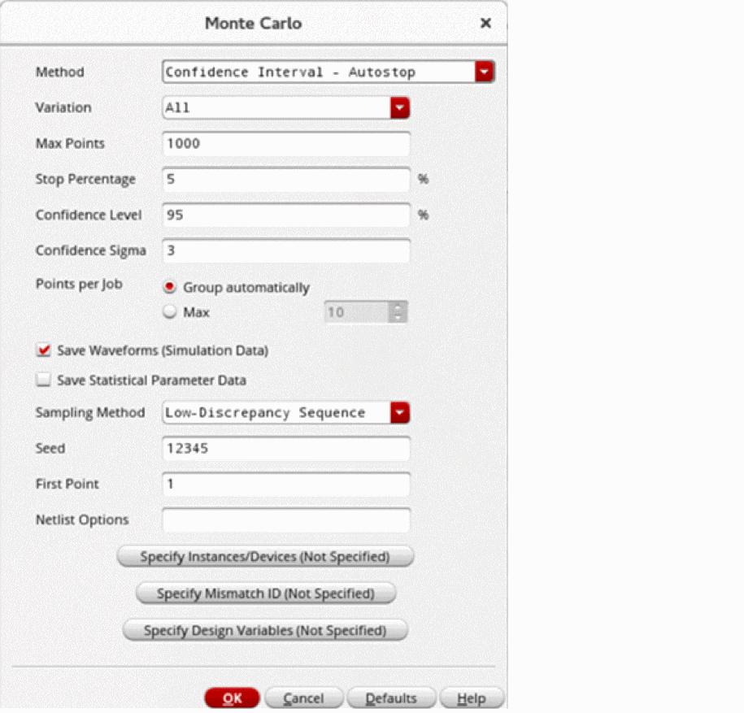
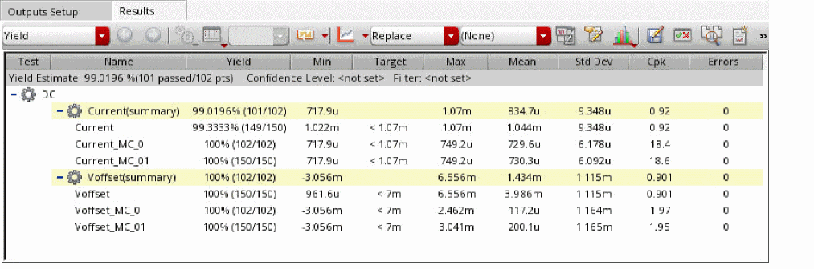
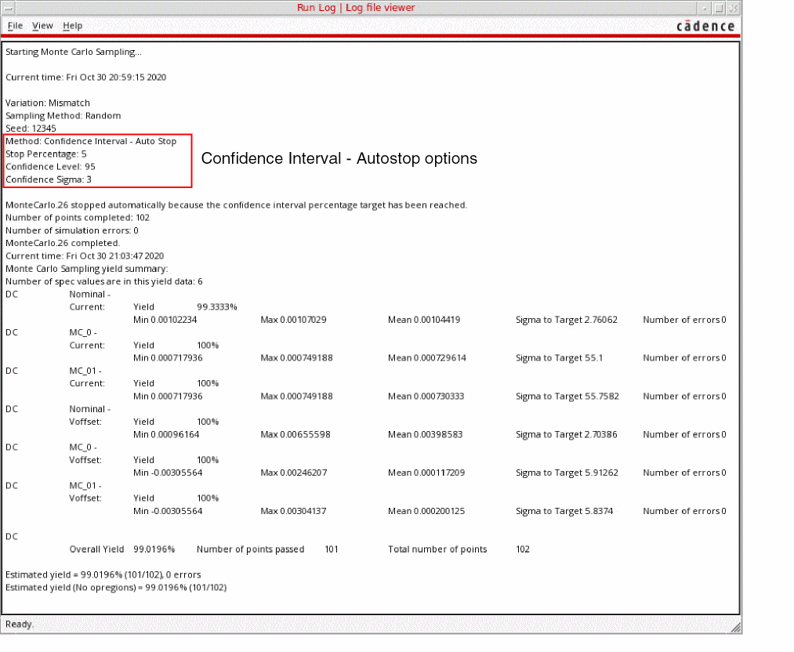

Running the Confidence Interval - Autostop Method
Before you run the Confidence Interval - Autostop Method, ensure that the following environment variable is set to t:
envSetVal("maestro.monte" "showMethodCIAutoStop" 'boolean t)
To run the Confidence Interval - Autostop method:
- Open your design in ADE Assembler or ADE Explorer.
- From the Run Mode drop-down list, select Monte Carlo Sampling.
-
Click the Simulation Options command.
The Monte Carlo form opens.
 - From the Method drop-down list, select Confidence Interval - Autostop.
- From the Variation drop-down list, select variation as All, Mismatch, or Process.
- In the Max Points field, specify the maximum number of sample points to simulate.
-
In the Stop Percentage field, enter the percentage value of stopping criteria for the Confidence Interval - Autostop method. The default value is
5. - In the Confidence Level field, specify confidence level for the output standard deviation considered by the stopping criteria.
-
In the Confidence Sigma field, specify the confidence sigma value that controls the range of output variation considered by the stopping criteria.
The Confidence Level and Confidence Sigma fields are hidden by default. You can set the showConfidenceAutoStopLevel and showConfidenceAutoStopSigmaenvironment variables totto view them. - In the Sampling Method drop-down, select either Random or Low-Discrepancy Sequence.
- Specify the other fields as required.
- Click OK to close the Monte Carlo form.
- Click Run Simulation to run the Confidence Interval - Autostop method.
The simulation results are displayed in the Results tab, as follows:

The run log is shown, as follows:

Related Topics
The Confidence Interval - Autostop Method
Advanced Options of the Confidence Interval - Autostop Method
Outputs Supported by the Confidence Interval - Autostop Method
Return to top